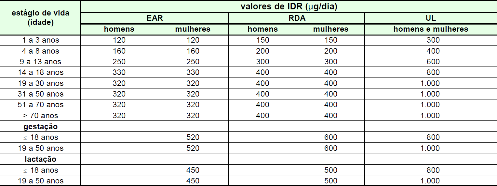

Dietary Reference Intake (IOM, 2000).
A tabela acima indica a IDR de folato, por estágio de vida. A partir dessas informações e com relação à IDR de folato,
assinale a opção correta.
-
Durante a gravidez, as necessidades de folato variam de acordo com a idade da gestante.
-
A partir de 19 anos de idade, deve-se consumir, em média, mais de 1.000
 g de folato, por dia.
g de folato, por dia.
-
Para uma mulher de 68 anos de idade, recomenda-se a ingestão média de folato de 400g/dia.
-
Durante a idade reprodutiva, a necessidade de folato é maior para a mulher que para o homem.
-
Os valores de EAR e de RDA da tabela correspondem às necessidades de folato estabelecidas a partir de uma curva
de regressão da UL.